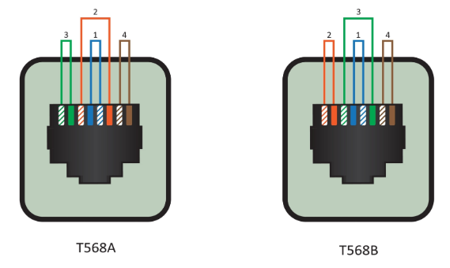

Bueno, para empezar, este laboratorio consistía en fabricar dos patchcords de red de forma manual: un cable directo y un cable cruzado, ambos de 3 metros. La idea principal era aprender cómo se construyen realmente los cables de red que se utilizan todos los días en computadoras, routers y switches, utilizando herramientas profesionales como la ponchadora, el pelacables y el tester. Sinceramente, al inicio parecía solo “ordenar cables por colores”, pero cuando empezamos a hacerlo nos dimos cuenta de que requería bastante paciencia y precisión.
Primero tuvimos que preparar el cable UTP, cortándolo en dos partes iguales de 3 metros cada una. Después se retiró una parte de la cubierta exterior para dejar visibles los pares trenzados internos. Y sinceramente, ahí comenzó el miedo de cortar accidentalmente uno de los hilos de cobre y arruinar todo antes de empezar. Luego tocó separar y acomodar los cables siguiendo el orden correcto de colores según las normas T568A y T568B.

Para el cable directo ambos extremos debían llevar el mismo orden de colores utilizando la norma B, mientras que para el cable cruzado un extremo se trabajaba con norma A y el otro con norma B. Y aunque en teoría parecía fácil seguir los colores, hubo momentos donde después de ver tanto blanco-verde, blanco-azul y blanco-café ya uno sentía que todos los cables se miraban iguales.
Después vino la parte más importante: el ponchado. Los cables debían cortarse perfectamente rectos e introducirse dentro del conector RJ45 asegurándose de que llegaran completamente al fondo. Luego se utilizó la ponchadora para fijar los pines del conector sobre los hilos de cobre. Y sinceramente, esa parte daba algo de nervios porque si el orden estaba mal o un cable no hacía contacto, tocaba cortar el conector y empezar otra vez desde cero.
Finalmente se utilizó el tester para verificar si los cables funcionaban correctamente. En el cable directo las luces debían encender de manera paralela, mientras que en el cruzado las conexiones cambiaban de posición. Y sinceramente, ver las luces encender correctamente después de todo el proceso sí daba cierta satisfacción, porque significaba que el cable realmente funcionaba y no solo se miraba bonito.
Finalmente se utilizó el tester para verificar si los cables funcionaban correctamente. En el cable directo las luces debían encender de manera paralela, mientras que en el cruzado las conexiones cambiaban de posición. Y sinceramente, ver las luces encender correctamente después de todo el proceso sí daba cierta satisfacción, porque significaba que el cable realmente funcionaba y no solo se miraba bonito.
Algo que dejó bastante aprendizaje fue entender que los estándares de colores existen por una razón y que no se pueden poner los cables “como uno quiera”. Porque aunque un cable pueda tener continuidad, si no sigue una norma correcta puede generar problemas de comunicación o hacer que los dispositivos no funcionen correctamente. ¿Cuántas veces uno conecta un cable de red sin pensar todo el trabajo y precisión que existe detrás de algo tan pequeño?
También aprendimos la importancia de utilizar herramientas adecuadas. La ponchadora, por ejemplo, no solo sirve para “aplastar” el conector, sino para asegurar que los pines perforen correctamente el cable y hagan buen contacto. Básicamente entendimos que intentar hacer eso con una pinza normal sería casi como querer reparar una computadora usando una piedra.
Además, este laboratorio ayudó bastante a desarrollar paciencia, porque cualquier pequeño error obligaba a repetir el proceso. Había momentos donde parecía que todo estaba perfecto y aun así el tester marcaba un fallo, así que tocaba revisar cable por cable hasta encontrar el problema.